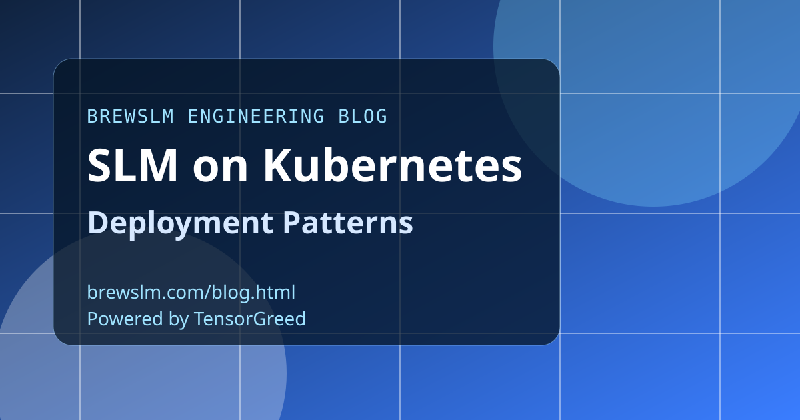

Separate build artifacts from runtime configuration
Store model artifacts as immutable release units and inject runtime settings through environment-specific config. This keeps deployments reproducible while allowing cluster-specific tuning. Artifact immutability simplifies rollback and incident debugging.
Use node classes for predictable placement
Define explicit node pools for CPU inference, edge GPU, or higher-memory serving profiles. Placement rules should be policy-driven rather than best-effort. Predictable placement lowers tail latency variance and avoids surprise evictions.
Scale on the right signals
For SLM serving, queue depth and tail latency are usually better autoscaling inputs than raw CPU percentage. Couple autoscaling with concurrency limits so pods do not degrade into overload behavior. Stability under burst traffic matters more than average throughput peaks.
Plan recovery paths before first production release
Run game-day scenarios for pod crash loops, node exhaustion, and malformed model artifacts. Document restoration order and ownership for each failure mode. Recovery quality is a core part of deployment quality.